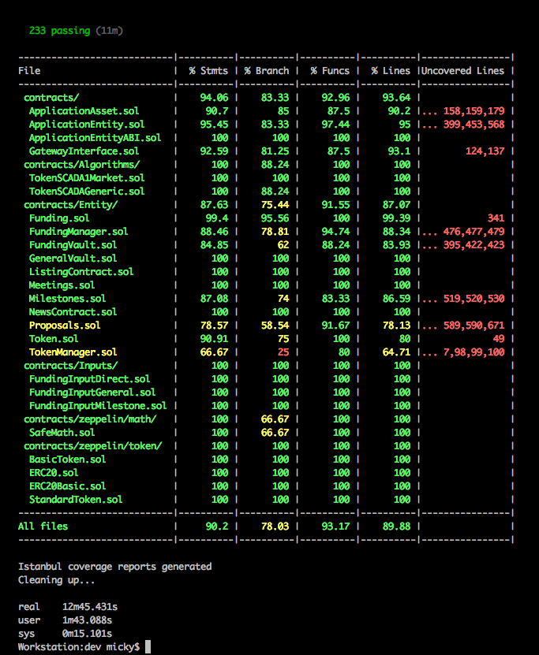

Starting our own testrpc instance at port 8555
Generating coverage environment
Instrumenting ./coverageEnv/contracts/Algorithms/TokenSCADA1Market.sol
Instrumenting ./coverageEnv/contracts/Algorithms/TokenSCADAGeneric.sol
Instrumenting ./coverageEnv/contracts/ApplicationAsset.sol
Instrumenting ./coverageEnv/contracts/ApplicationEntity.sol
Instrumenting ./coverageEnv/contracts/ApplicationEntityABI.sol
Instrumenting ./coverageEnv/contracts/Entity/Funding.sol
Instrumenting ./coverageEnv/contracts/Entity/FundingManager.sol
Instrumenting ./coverageEnv/contracts/Entity/FundingVault.sol
Instrumenting ./coverageEnv/contracts/Entity/GeneralVault.sol
Instrumenting ./coverageEnv/contracts/Entity/ListingContract.sol
Instrumenting ./coverageEnv/contracts/Entity/Meetings.sol
Instrumenting ./coverageEnv/contracts/Entity/Milestones.sol
Instrumenting ./coverageEnv/contracts/Entity/Proposals.sol
Instrumenting ./coverageEnv/contracts/Entity/Token.sol
Instrumenting ./coverageEnv/contracts/Entity/TokenManager.sol
Instrumenting ./coverageEnv/contracts/GatewayInterface.sol
Instrumenting ./coverageEnv/contracts/Inputs/FundingInputDirect.sol
Instrumenting ./coverageEnv/contracts/Inputs/FundingInputGeneral.sol
Instrumenting ./coverageEnv/contracts/Inputs/FundingInputMilestone.sol
Instrumenting ./coverageEnv/contracts/library/FundingVaultLib.sol
Skipping instrumentation of ./coverageEnv/contracts/misc/Migrations.sol
Skipping instrumentation of ./coverageEnv/contracts/zeppelin/math/Math.sol
Instrumenting ./coverageEnv/contracts/zeppelin/math/SafeMath.sol
Instrumenting ./coverageEnv/contracts/zeppelin/token/BasicToken.sol
Instrumenting ./coverageEnv/contracts/zeppelin/token/ERC20.sol
Instrumenting ./coverageEnv/contracts/zeppelin/token/ERC20Basic.sol
Instrumenting ./coverageEnv/contracts/zeppelin/token/StandardToken.sol
Running: node --max-old-space-size=4096 ../node_modules/.bin/truffle test --network coverage
(this can take a few seconds)...
Using network 'coverage'.
Compiling ./contracts/Algorithms/TokenSCADA1Market.sol...
Compiling ./contracts/Algorithms/TokenSCADAGeneric.sol...
Compiling ./contracts/ApplicationAsset.sol...
Compiling ./contracts/ApplicationEntity.sol...
Compiling ./contracts/ApplicationEntityABI.sol...
Compiling ./contracts/Entity/Funding.sol...
Compiling ./contracts/Entity/FundingManager.sol...
Compiling ./contracts/Entity/FundingVault.sol...
Compiling ./contracts/Entity/GeneralVault.sol...
Compiling ./contracts/Entity/ListingContract.sol...
Compiling ./contracts/Entity/Meetings.sol...
Compiling ./contracts/Entity/Milestones.sol...
Compiling ./contracts/Entity/Proposals.sol...
Compiling ./contracts/Entity/Token.sol...
Compiling ./contracts/Entity/TokenManager.sol...
Compiling ./contracts/GatewayInterface.sol...
Compiling ./contracts/Inputs/FundingInputDirect.sol...
Compiling ./contracts/Inputs/FundingInputGeneral.sol...
Compiling ./contracts/Inputs/FundingInputMilestone.sol...
Compiling ./contracts/library/FundingVaultLib.sol...
Compiling ./contracts/misc/Migrations.sol...
Compiling ./contracts/zeppelin/math/Math.sol...
Compiling ./contracts/zeppelin/math/SafeMath.sol...
Compiling ./contracts/zeppelin/token/BasicToken.sol...
Compiling ./contracts/zeppelin/token/ERC20.sol...
Compiling ./contracts/zeppelin/token/ERC20Basic.sol...
Compiling ./contracts/zeppelin/token/StandardToken.sol...
Compiling ./test/helpers/ExecutionTarget.sol...
Compiling ./test/helpers/SolidityAccountUtils.sol...
Compiling ./test/mocks/EmptyStub.sol...
Compiling ./test/mocks/GenericCaller.sol...
Compiling ./test/mocks/SafeMathMock.sol...
Compiling ./test/mocks/SampleRecipientSuccess.sol...
Compiling ./test/mocks/SampleRecipientThrow.sol...
Compiling ./test/mocks/TestApplicationAsset.sol...
Compiling ./test/mocks/TestApplicationEntity.sol...
Compiling ./test/mocks/TestApplicationEntityABI.sol...
Compiling ./test/mocks/TestApplicationEntityBad.sol...
Compiling ./test/mocks/TestERC20Caller.sol...
Compiling ./test/mocks/TestFunding.sol...
Compiling ./test/mocks/TestFundingInputMock.sol...
Compiling ./test/mocks/TestFundingManager.sol...
Compiling ./test/mocks/TestFundingVault.sol...
Compiling ./test/mocks/TestGatewayInterface.sol...
Compiling ./test/mocks/TestGeneralVault.sol...
Compiling ./test/mocks/TestListingContract.sol...
Compiling ./test/mocks/TestMeetings.sol...
Compiling ./test/mocks/TestMilestones.sol...
Compiling ./test/mocks/TestProposals.sol...
Compiling ./test/mocks/TestToken.sol...
Compiling ./test/mocks/TestTokenManager.sol...
Compiling ./test/mocks/TestTokenSCADA1Market.sol...
Compilation warnings encountered:
/Volumes/Dev/ico/dev/coverageEnv/contracts/Entity/FundingManager.sol:500:6: Warning: Unused local variable.
var (returnedCurrentEntityState, EntityStateRequired) = getRequiredStateChanges();
^------------------------^
,/Volumes/Dev/ico/dev/coverageEnv/contracts/zeppelin/math/Math.sol:9:3: Warning: Function state mutability can be restricted to pure
function max64(uint64 a, uint64 b) internal returns (uint64) {
^
Spanning multiple lines.
,/Volumes/Dev/ico/dev/coverageEnv/contracts/zeppelin/math/Math.sol:13:3: Warning: Function state mutability can be restricted to pure
function min64(uint64 a, uint64 b) internal returns (uint64) {
^
Spanning multiple lines.
,/Volumes/Dev/ico/dev/coverageEnv/contracts/zeppelin/math/Math.sol:17:3: Warning: Function state mutability can be restricted to pure
function max256(uint256 a, uint256 b) internal returns (uint256) {
^
Spanning multiple lines.
,/Volumes/Dev/ico/dev/coverageEnv/contracts/zeppelin/math/Math.sol:21:3: Warning: Function state mutability can be restricted to pure
function min256(uint256 a, uint256 b) internal returns (uint256) {
^
Spanning multiple lines.
,/Volumes/Dev/ico/dev/coverageEnv/test/helpers/SolidityAccountUtils.sol:8:5: Warning: Function state mutability can be restricted to view
function getBalance(address _address) public returns (uint256) {
^
Spanning multiple lines.
,/Volumes/Dev/ico/dev/coverageEnv/test/mocks/TestApplicationEntity.sol:39:5: Warning: Function state mutability can be restricted to view
function getTimestamp() public returns (uint256) {
^
Spanning multiple lines.
----------------------------------------------------------------
Running test collections [12].
----------------------------------------------------------------
Contract: ERC20 Token
✓ creation: in contract settings should match constructor parameters (244ms)
✓ creation: should create a correct initial balance for the creator (45ms)
✓ creation: test correct setting of vanity information (128ms)
✓ creation: should succeed in creating over 2^256 - 1 (max) tokens (92ms)
✓ transfers: ether transfer should be reversed.
✓ transfers: should transfer 10000 to accounts[1] with accounts[0] having 10000 (71ms)
✓ transfers: should fail when trying to transfer total amount +1 to accounts[1] with accounts[0] having total amount (77ms)
✓ transfers: should handle zero-transfers normally (85ms)
✓ transfers: should throw if receiver address is 0x0
✓ transferFrom: should throw if receiver address is 0x0 (52ms)
✓ transfer: msg.sender should transfer 100 to SampleRecipient and then NOTIFY SampleRecipient. It should succeed. (142ms)
✓ transfer: msg.sender should transfer 100 to SampleRecipient and then NOTIFY SampleRecipient and throw if called as view method. (84ms)
✓ approvals: msg.sender should approve 100 to accounts[1] (55ms)
✓ approvals: msg.sender approves accounts[1] of 100 & withdraws 20 once. (345ms)
✓ approvals: msg.sender approves accounts[1] of 100 & withdraws 20 twice. (341ms)
✓ approvals: msg.sender approves accounts[1] of 100 & withdraws 50 & 60 (2nd tx should fail) (279ms)
✓ approvals: attempt withdrawal from account with no allowance (should fail) (71ms)
✓ approvals: allow accounts[1] 100 to withdraw from accounts[0]. Withdraw 60 and then approve 0 & attempt transfer. (123ms)
✓ approvals: approve max (2^256 - 1) (51ms)
✓ approvals: msg.sender approves accounts[1] of max (2^256 - 1) & withdraws 20 (222ms)
✓ allowance: should start with zero
✓ allowance: should increase by 50 then decrease by 10 (127ms)
✓ allowance: should be set to zero if decrease value is higher than existing (95ms)
✓ events: should fire Transfer event properly
✓ events: should fire Transfer event normally on a zero transfer
✓ events: should fire Approval event properly
Contract: SafeMath
✓ multiplies correctly (50ms)
✓ adds correctly (53ms)
✓ subtracts correctly
✓ should throw an error if subtraction result would be negative
✓ should throw an error on addition overflow
✓ should throw an error on multiplication overflow
Contract: Gateway Interface
✓ initializes with empty properties
requestCodeUpgrade()
✓ throws if address is empty ( 0x0 )
✓ throws if calling object misses the initialize() method
✓ throws if current Application cannot initialize Assets properly (111ms)
✓ links Application if valid (86ms)
✓ creates "Upgrade Proposal" if a previous Application is already linked (333ms)
approveCodeUpgrade()
✓ throws if sender is not current Application
✓ works if sender is current Application (367ms)
✓ throws if current Application cannot transfer assets to new application (221ms)
✓ throws if current Application cannot initialize new application (353ms)
✓ throws if current Application cannot lock itself after transferring assets (371ms)
Contract: Application Assets
setInitialOwnerAndName()
✓ works if linking an asset for the first time (108ms)
✓ throws if already owned (67ms)
applyAndLockSettings()
✓ works if called by deployer account and asset is not locked already (109ms)
✓ throws if called before initialization
✓ throws if called when settings are already applied (115ms)
✓ throws if not called by deployer's account (68ms)
getApplicationAssetAddressByName()
✓ works if asset is initialized and owned by an application (119ms)
✓ works if asset has settings and they are applied (182ms)
✓ throws if asset name does not exist in the app's mapping (108ms)
transferToNewOwner()
✓ works if current caller is owner and requested address is not 0x0 (127ms)
✓ throws if called when internal owner address is invalid
✓ throws if owned and called by other address (78ms)
Contract: Application Entity
✓ initializes with empty properties (65ms)
setBylawString()
✓ sets and returns a bylaw string if not initialized (182ms)
✓ throws if if application is already initialized (81ms)
getBylawString()
✓ throws if application is not initialized
✓ returns correct value set by setBylawString if application is initialized (108ms)
setBylawUint256()
✓ sets and returns a bylaw uint256 if not initialized (170ms)
✓ throws if if application is already initialized (85ms)
getBylawUint256()
✓ throws if application is not initialized
✓ returns correct value set by setBylaw if application is initialized (105ms)
initialize()
✓ throws if called when already initialized (49ms)
✓ throws if called with owner missing ( gateway )
✓ works if owner is set, and it's the one calling (73ms)
lock()
✓ throws if sender is not gateway
✓ works if sender is gateway (69ms)
linkToGateway()
✓ throws if called when owner already exists
✓ throws if called when already initialized (39ms)
✓ will emit EventAppEntityReady on initial linking (77ms)
✓ will emit EventProposalsCodeUpgradeNew if a previous ApplicationEntity is already linked (323ms)
addAsset[AssetName]()
✓ throws if called when already initialized (78ms)
✓ linking an asset will emit EventAppEntityInitAsset event (92ms)
✓ linking all assets will emit the same number of EventAppEntityInitAsset events (459ms)
initializeAssetsToThisApplication()
✓ throws if not an asset (93ms)
✓ throws if caller is not gateway (38ms)
acceptCodeUpgradeProposal()
✓ throws if caller is not Proposals Asset (81ms)
Contract: Gateway and Application Integration
✓ initial deployment (106ms)
✓ first linking (184ms)
Application upgrades
✓ first upgrade (378ms)
✓ second upgrade (784ms)
Contract: TokenManager Asset
addTokenSettingsAndInit()
✓ properly sets up the tokens if initialized (95ms)
✓ properly sets up the Token SCADA (160ms)
getTokenSCADARequiresHardCap()
✓ returns boolean value stored in SCADA Contract (93ms)
Contract: Funding Vault
✓ initializes with empty properties (126ms)
✓ addPayment throws if not initialized
✓ TokenSCADA provides 0 tokens when no payments are registered yet (175ms)
initialize()
✓ throws if called when already initialized
✓ works if settings are correct and has not been initialized before (166ms)
addPayment()
✓ FUNDING_DIRECT_METHOD - works with correct settings and caller (216ms)
✓ FUNDING_MILESTONE_METHOD - works with correct settings and caller (200ms)
✓ throws if msg.value is missing
✓ throws if payment method does not exist
✓ throws if called by other address than manager (funding contract)
✓ handles multiple payments, irregardless of funding method provided (129ms)
Contract: Funding Asset
✓ deploys with no Funding Stages (39ms)
✓ deploys with no multiSigOutputAddress
✓ deploys with no Funding Inputs (176ms)
✓ has Funding Inputs once initialized (59ms)
addSettings()
✓ throws if called when settings are locked (97ms)
✓ throws if global soft cap is greater than global hard cap
✓ properly sets up the funding settings (117ms)
first funding stage
✓ successfully creates a funding stage with proper settings (105ms)
✓ throws if end time is before or equal to start time
✓ throws if token selling percentage is higher than 100% (43ms)
SCADA Disallows Record Hard Cap, Requires Globals
✓ throws if soft cap exists (46ms)
✓ throws if hard cap exists (47ms)
✓ works if hard cap and soft cap is 0 (98ms)
when at least 1 funding stage already exists
✓ successfully creates the second funding stage with proper settings (114ms)
✓ throws if new funding stage start time overlaps existing stage (51ms)
✓ throws if new funding stage + existing stage sell more than 100% of tokens (49ms)
funding stages added, asset initialized
✓ has correct Funding Inputs after ApplicationEntity grabs asset ownership and initializes it (54ms)
receivePayment()
✓ throws if called directly in the Funding contract
✓ throws if caller is not funding asset
✓ throws if _payment_method is not allowed (129ms)
canAcceptPayment()
✓ returns false if CurrentEntityState is not IN_PROGRESS (40ms)
CurrentEntityState is IN_PROGRESS
✓ returns false if ETH value is 0
✓ returns false if ETH value is smaller than minimum entry (462ms)
✓ returns false if any State changes are required (676ms)
Funding State: IN_PROGRESS
Funding Input: All
✓ has correct FundingAssetAddress
✓ throws if msg.value is missing
✓ throws if FundingAssetAddress is not set (79ms)
✓ throws if FundingAsset is not pointing to a Contract (61ms)
Funding Input: Direct
✓ has correct type id = 1
↓ Direct Payment: GAS USAGE: 5327329
✓ accepts payments using fallback () method and stores in valut's direct pool (379ms)
↓ First Direct Payment: GAS USAGE: 5327329
↓ Second Direct Payment: GAS USAGE: 338761
✓ accepts second payment from same investor (611ms)
✓ accepts second payment from same investor using both payment methods ( Direct & Milestone ) (604ms)
Funding Input: Milestone
✓ has correct type id = 2
↓ Milestone Payment: GAS USAGE: 5327470
✓ accepts payments using fallback () method and stores in valut's milestone pool (370ms)
Contract: Funding Asset - Payments
✓ TokenSCADA provides the correct token stake for current funding phase (494ms)
✓ TokenSCADA provides the correct token stake when buying multiple times (638ms)
✓ TokenSCADA provides the correct token stake when multiple investors are buying multiple times (1083ms)
Contract: Funding Asset - States
✓ starts with state as New and requires a change to WAITING if current time is before any funding stage (322ms)
✓ handles ENTITY state change from NEW to WAITING when funding does not start yet (797ms)
✓ starts with state as New and has correct Token Balance once in WAITING state (689ms)
✓ handles ENTITY state change from NEW or WAITING to IN_PROGRESS when funding time start has passed (652ms)
✓ is in IN_PROGRESS, receives payments, pre_ico time passes, should Require change to COOLDOWN (1189ms)
✓ handles ENTITY state change from IN_PROGRESS to COOLDOWN when funding period time start has passed (1227ms)
✓ is in COOLDOWN, ico start time passes, should Require change to IN_PROGRESS (1493ms)
✓ handles ENTITY state change from COOLDOWN to IN_PROGRESS when next funding period time start has passed (1793ms)
✓ is IN_PROGRESS, ico end time passes, should Require change to FUNDING_ENDED (2164ms)
handles ENTITY state change from IN_PROGRESS when last funding period time end has passed
✓ to FAILED when payments did not reach soft cap (2365ms)
✓ to SUCCESSFUL when payments reached soft cap (2431ms)
handles ENTITY state change from IN_PROGRESS when Hard Cap is Reached
✓ to SUCCESSFUL when payments reached hard cap in first funding stage (pre-ico) (1856ms)
✓ to SUCCESSFUL when payments reached hard cap in last funding stage (ico) (2269ms)
FundingManager Tasks
✓ handles ENTITY state change from FAILED to FAILED_FINAL after FundingManager Task Process finished (5354ms)
✓ handles ENTITY state change from SUCCESSFUL to SUCCESSFUL_FINAL after FundingManager Task Process finished (6218ms)
misc for extra coverage
✓ isFundingStageUpdateAllowed returns false if not allowed (586ms)
✓ should run doStateChanges even if no changes are required (369ms)
Contract: FundingManager Asset
✓ receivePayment() throws if caller is not funding asset (49ms)
FundingEndedProcessVaultList()
✓ vaultNum has correct number of payments
✓ throws if Funding State is not "FUNDING_ENDED"
✓ Funding State is "FUNDING_ENDED" (1734ms)
states
✓ starts with state as New and requires a change to WAITING (59ms)
✓ handles ENTITY state change from NEW to WAITING (362ms)
✓ handles ENTITY state change from NEW or WAITING to FUNDING_FAILED_START when funding state is FAILED (3915ms)
Funding has payments, but does not reach Soft Cap
✓ handles ENTITY state change from FUNDING_FAILED_START to FUNDING_FAILED_PROGRESS (643ms)
✓ handles ENTITY state change from FUNDING_FAILED_PROGRESS to FUNDING_FAILED_DONE, and processes all vaults (1355ms)
Funding has payments, and Soft Cap is reached
✓ handles ENTITY state change from FUNDING_SUCCESSFUL_START to FUNDING_SUCCESSFUL_PROGRESS (639ms)
✓ handles ENTITY state change from FUNDING_SUCCESSFUL_PROGRESS to FUNDING_SUCCESSFUL_DONE, and processes all vaults (2213ms)
162 passing (3m)
